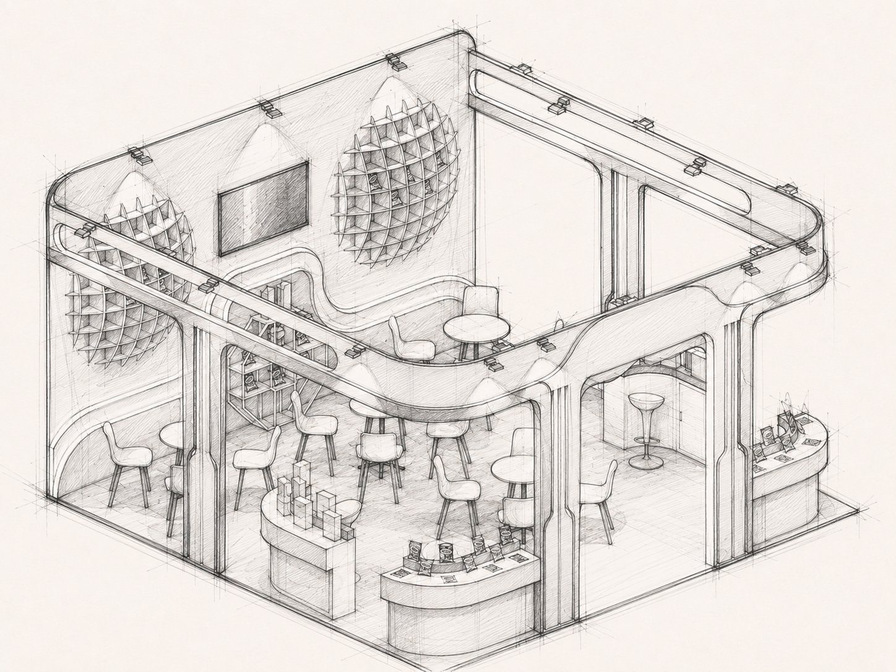
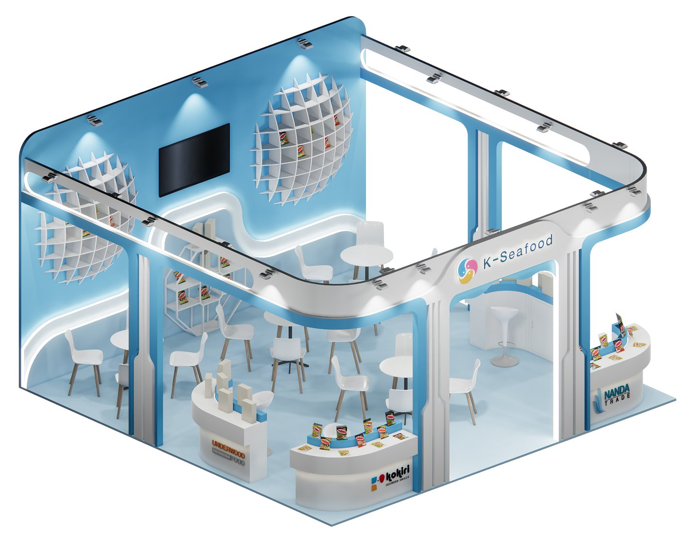
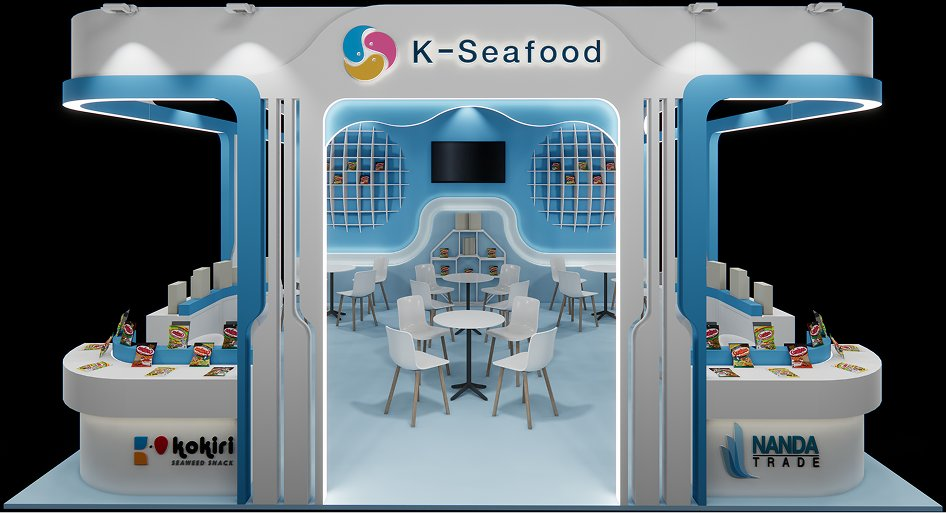
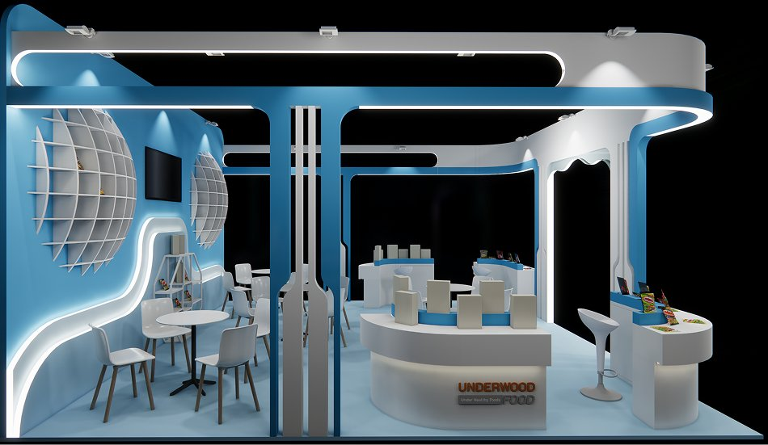
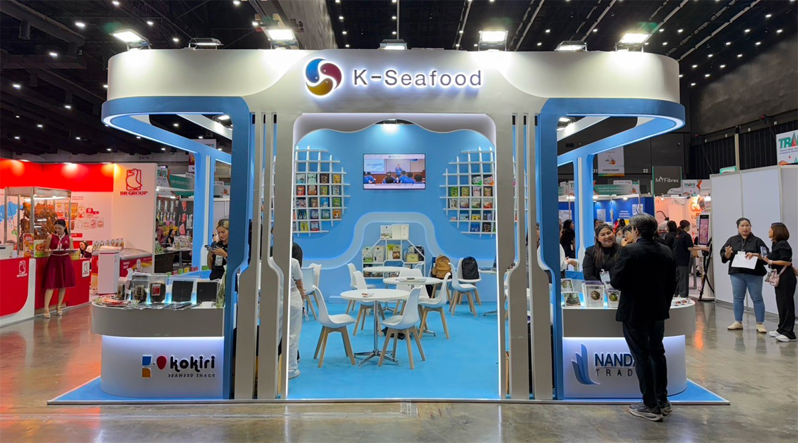
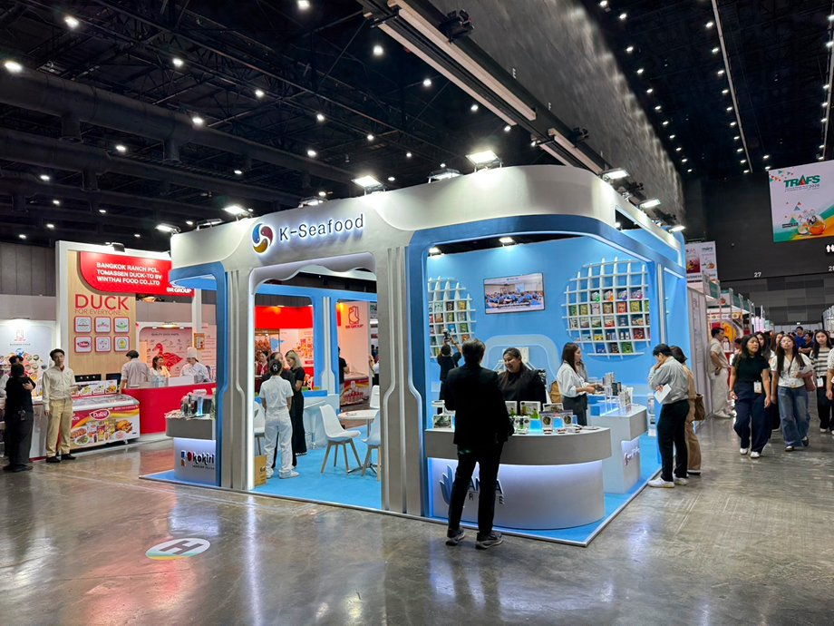
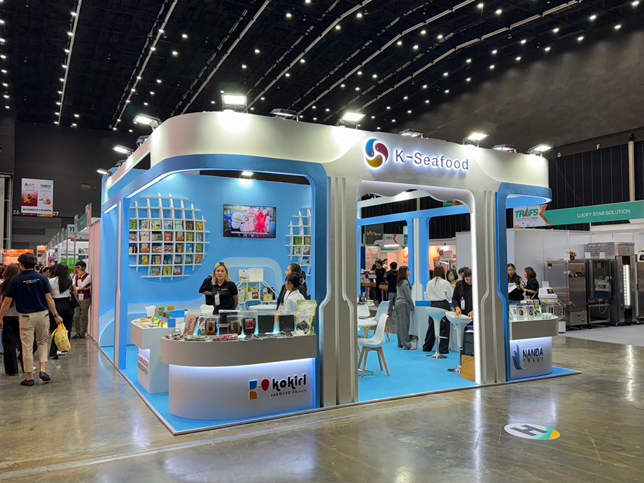

Ocean waves turned into structure: a curved, bright pavilion where three exporters share one address.
Designed the K-Seafood Booth for TRAFS 2026, drawing inspiration from ocean waves through its curved forms and from the clarity of the Korean sea through its bright blue-and-white palette.
A trade booth is a sales office that has to look like an advertisement. Buyers need to sit down, be served and talk for twenty minutes; the hall needs to see from thirty metres away whose booth it is. Three separate exporters also needed to be individually findable inside it without three competing sets of branding. Curves solve the recognition problem and complicate everything else: every curved surface is a fabrication drawing, a material limit and a cost.
In a hall of square white shells, the cheapest way to be noticed is to be the only thing that curves.
TRAFS runs on modular booths with straight walls and flat fascia signs. Anything with a radius, a soft edge or a lit soffit becomes the landmark of its aisle.
Chefs, distributors and retail buyers walk in twos and threes and stay if they can sit. Seating capacity, not display area, is what converts a food-service booth.
Every seafood exhibitor uses blue, so differentiation had to come from value rather than hue: bright, high-key blue against white instead of the usual deep navy.
Comes with a list and a schedule. Needs a table, a sample and a specification sheet, and judges the exporter partly by whether the booth looks like a serious operation.
Decides by taste. Wants the product opened, in small quantity, without a queue and without commitment.
Kokiri, Nanda Trade and Underwood Food each need their own counter, their own name visible and their own room to talk, inside a booth that must still read as one.
Design intent, not measured data. Relative share of the footprint each function was allowed to claim, seating deliberately takes the most.
Three different lengths of visit, so the booth is planned as three depths: aisle edge, open floor, and the closed back-of-house strip.
One continuous curved band runs the perimeter of the booth as fascia, portal and counter edge, so the wave is not applied decoration but the thing holding the pavilion together. Bright blue against white gives it the clarity of the Korean sea; spherical lattice shelves put product on the wall where a shell scheme has nothing.

The identity element and the signage carrier in one, wrapping every open side and framing two entrances.
Grid-built hemispheres on the back wall, each cell holding a single pack, display and pattern at the same time.
Round tables and light chairs in the middle of the plan, visible from the aisle so an occupied booth advertises itself.
Identical rounded volumes, one per company, each carrying its own logo on the front face and its samples on top.
Every curved element defined by substrate and finish, so the supplier could price a radius instead of guessing at one.
Two-tone palette fixed to references and applied consistently across paint, print and vinyl, where the same blue reads differently on each.
Spot positions on the fascia and a lit line inside the portal, so the structure is lit rather than silhouetted against the hall.
K-Seafood mark on the fascia, exporter logos at counter height only, one hierarchy, no competition between the four names.
Pale blue floor across the whole footprint, used to mark the booth boundary that the open sides no longer provide.

The lit fascia and the portal locate the booth from down the aisle.
Exporter counters at the corners, packs handled before anyone speaks.
Lattice spheres and screen give the full range at a glance.
A round table in the middle of the booth, the working heart of it.
Samples and paperwork handed over at the counter on the way out.
The wave silhouette identifies the booth before any name can be read, which is the only advantage available in a hall of identical shells.
No internal walls. Zoning is done with counter height, carpet and light, so the booth stays open on every side it can and a meeting in progress is part of the display.
What the supplier received was five specification packages. The 3D view exists to make everyone agree; the packages are what gets built.





The wave appears as fascia, portal and counter edge and nowhere else. Repeating a single curve gave the booth a stronger identity than a set of separate features would have.
Writing the material, lighting and graphic packages myself meant the curves were drawn to what a supplier can actually bend, not left to be simplified on site.
Seating fills the centre so completely that a first-time visitor has to walk past other people's meetings to reach the wall display. I would pull the tables one bay back and keep a clear diagonal from the corner to the product.